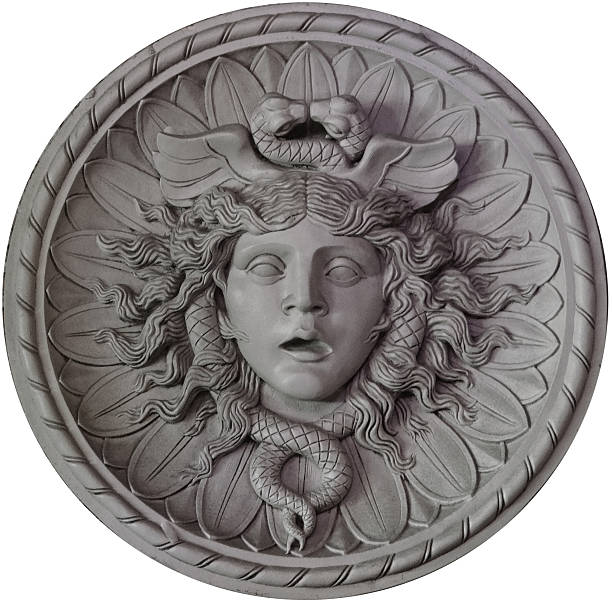
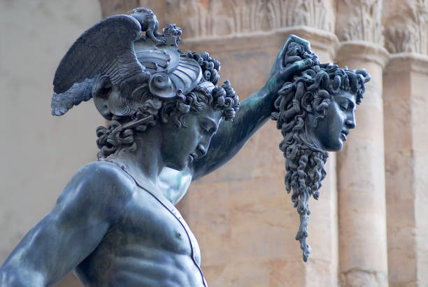

Vol. 1: Mitologia Griega
Medusa
Medusa es una figura de la mitología griega, la única mortal de las tres Gorgonas, junto con sus hermanas inmortales, Esteno y Euríale. Las tres Gorgonas nacieron del dios del mar de los peligros de las profundidades ocultas, Forcys, y de la diosa de los monstruos marinos y de los peligros del mar, Ceto.


Según Hesíodo en su Teogonía, Medusa y sus hermanas eran las hermanas de las Griegas y vivían "al otro lado del ilustre Océano, en las últimas extremidades, hacia la noche, donde están las Herpérides de voces sonoras" (Teogonía, 270). A menudo se menciona a las tres hermanas juntas, pero es Medusa la que se suele representar tanto en la literatura como en el arte de la Grecia antigua. Medusa es más conocida por la historia de su muerte, provocada por el héroe Perseo, que la decapitó con la ayuda de los dioses Hermes y Atenea. La versión más antigua de la muerte de Medusa es la de la Teogonía de Hesíodo, que detalla su decapitación y describe a sus hijos Pegaso, el caballo alado, y el gran Crisáor, que surgió de su cuello. Las menciones a la cabeza de la Gorgona en la Ilíada y la Odisea de Homero, que originalmente formaban parte de la tradición oral griega antes de ser puestas por escrito en algún momento del siglo VIII a.C., insinúan una larga historia del complejo carácter de la Gorgona Medusa.